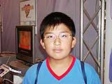
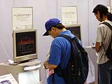

| #7 ゲームボーイアドバンス ライセンシータイトル体験コーナーレポート その６ |
ゲームボーイアドバンス ライセンシータイトル体験コーナーレポート その６ page1 ・・・ page2 |
| ● ラブひなアドバンス 祝福の鐘はなるかな マーベラスエンターテイメント |
|
 コミックやアニメで多くのファンを獲得した「ラブひな」が、アドバンスのソフトになりました。ドキドキしたり、感動したり、魅力いっぱいのラブコメが、身近な携帯ゲームで遊べるなんてうれしい！ プレイヤーは主人公の景太郎になり、ひなた荘の女の子たちと交流していきます。ハッピーエンドは迎えられるかな？ 埼玉県から電車で２時間かけてやって来たという花田龍之佑くんは、「面白かった。絵がきれいだったです」とコメント。アドバンスの高性能な液晶画面で、女の子のきれいなグラフィックもバッチリ再現されています。 |
| ● 大麻雀。 ホリ |
|
トーナメント戦、リーグ戦、フリー対局がプレイできる麻雀ゲーム。もちろん、対戦にも対応していますよ。なんと、１カートリッジで４人対戦ができるというおトクな仕様。やっぱり麻雀は４人が基本。お友達と一緒に楽しみたいですね。黄金牌を集めると、ミニゲームなどの新しいモードも追加されます。じっくりやりこんで深く遊びたいゲーム。 お父さんたちも並んでいた体験コーナー。大人のユーザーさんに人気でした。子どもさんに手をひっぱられながら、うらやましそうな視線を投げかけて通りすぎるお父さんも。発売されたら、ぜひ遊んでみてくださいね。 |
| ● Wizardry SUMMONER メディアリング |
|
 名作ＲＰＧの呼び名が高い『Ｗｉｚａｒｄｒｙ』。アドバンスの美しいカラー画面でプレイできるなんて感動ですね！ いままでにさまざまなハードで登場していますが、アドバンスでは新しく「召還士」の職業があるのが大きな違いです。召還を使えば、なんと倒したモンスターをパーティに組みこむことができるんです！ さらには、通信ケーブルでアイテムの交換も可能。これで、「あのアイテムが出ない！」なんて苦しむ必要がなくなりました。 体験プレイでは、３つのダンジョンを自由に遊べます。ハマって遊んでいるかたも多く見られましたよ。スタッフにお話をうかがいました。「アドバンス版では召還がポイントです。モンスターの召還シーンでは画面いっぱいにグラフィックが広がり、いままでの『Ｗｉｚａｒｄｒｙ』にはない魅力があります」。モンスターを集めて連れていけるのも楽しいですね。 |
ゲームボーイアドバンス ライセンシータイトル体験コーナーレポート その６ page1 ・・・ page2 |
| 前のレポートへ | 次のレポートへ |
|
|